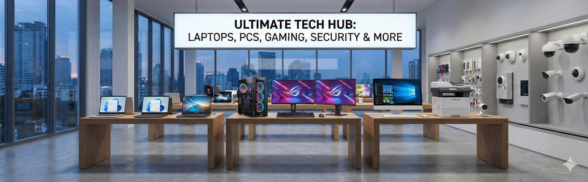

Quality-tested refurbished MacBooks, HP, Dell, Lenovo and more at affordable prices in Bhuj.
Looking for an affordable, reliable laptop or computer in Bhuj? Hari Tech Solutions offers a wide range of quality-tested refurbished laptops and computers in Bhuj at prices that fit every budget. Whether you are a student, a working professional, or a business owner in Bhuj, we have the right system for your needs.
All refurbished systems sold at Hari Tech Solutions go through a rigorous quality check before they reach you. We test performance, battery health, screen quality, keyboard function, and all ports to ensure you receive a fully functional device. We specialize in refurbished Apple MacBooks with verified battery health, making us the go-to destination for premium refurbished laptops in Bhuj.
Why buy new when you can get the same performance from a quality-tested refurbished laptop at half the price? With Hari Tech Solutions in Bhuj, you get the best value for money with warranty included. We have been serving Bhuj customers since 1993 with honest advice and transparent pricing — no hidden costs, no compromises on quality.
Our stock includes Apple MacBook Air, MacBook Pro, HP laptops, Dell laptops, Lenovo ThinkPad, and desktop computers. We also take in trade-ins, so if you have an old laptop you want to exchange for a newer refurbished model, contact us today. New stock arrives regularly, so reach out to check current availability in Bhuj.
Certified refurbished Apple MacBook Air and Pro in Bhuj with verified battery health.
Quality HP laptops at affordable prices in Bhuj for home and office use.
Reliable Dell laptops tested and ready for use in Bhuj offices and homes.
Lenovo ThinkPad and IdeaPad refurbished laptops in Bhuj for students and professionals.
Compact and full-size desktop computers for offices and businesses in Bhuj.
Exchange your old laptop for a newer refurbished model at Hari Tech Solutions Bhuj.
Every device is thoroughly tested for performance, battery, and all functions before sale.
All refurbished laptops and computers come with warranty for your peace of mind.
Get premium performance at affordable prices. Save 30–60% vs buying new.
Hari Tech Solutions has been trusted by customers in Bhuj since 1993.
Yes. All refurbished laptops at Hari Tech Solutions in Bhuj are thoroughly tested for performance, battery health, and functionality before sale. We provide warranty on every device.
Refurbished laptops in Bhuj start from ₹8,000. MacBooks and premium brands depend on specifications and condition. Call us for current pricing.
Yes! All refurbished laptops and computers sold by Hari Tech Solutions in Bhuj come with warranty, typically 3 to 12 months depending on the device.
Absolutely! Refurbished MacBooks offer excellent performance and build quality at a fraction of the new price. Hari Tech Solutions specializes in quality-tested refurbished MacBooks in Bhuj.
Yes! We accept old laptops as trade-ins and offer fair value towards your new refurbished purchase at Hari Tech Solutions in Bhuj.
Contact Hari Tech Solutions for the best selection of quality-tested refurbished laptops and computers in Bhuj.
Also explore: All Products | Computer Repair | Services | Contact